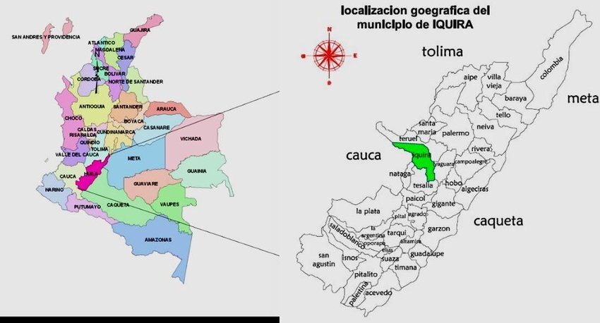
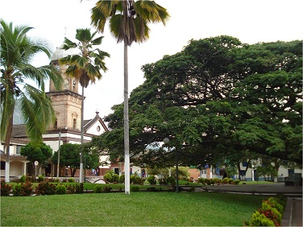
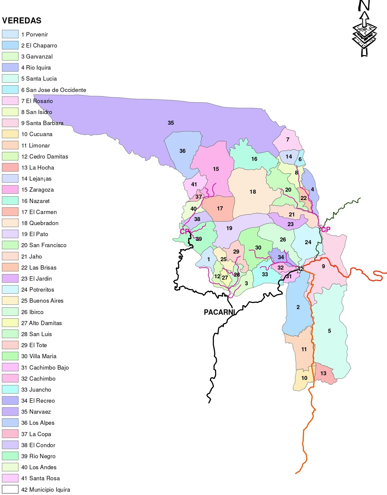

El municipio de Íquira está localizado en la parte occidental del departamento del Huila sobre las estribaciones del volcán nevado del Huila. Limita al norte con el municipio de Teruel, al sur con el municipio de Tesalia, al oriente con los municipios de Teruel y Yaguará y al occidente con Nátaga y el departamento del Cauca. Adicionalmente, Íquira queda a a 64 Km de la ciudad de Neiva (Capital del Huila), lo que se traduce a más o menos 1 hora y 40 minutos, teniendo en cuenta el mal estado de las vías secundarias que llevan al municipio. (Ver)
En la topografía del municipio predomina la característica montañosa, la cual alterna con valles, mesetas, colinas y pequeños cañones. El clima constituye el conjunto de condiciones de la atmósfera que caracteriza el estado o situación del tiempo atmosférico y su evolución en un lugar dado. De acuerdo con esto, el Municipio cuenta con diversos pisos térmicos: Clima Cálido: comprende 55 Km2 y temperaturas entre 20 y 25°C. Clima Medio: Comprende 220 Km2 con temperaturas entre 18 y 20°C. Clima Frío: Comprende 254 Km2 con temperaturas entre 10 y 12°C. Clima de Páramo: Comprende 3 Km2 con temperaturas inferiores a 5°C. La precipitación anual promedia es de 1.600 mm.; además, en promedio el riesgo volcánico es bajo. Asimismo, se pueden exponer las siguientes características:
| Extensión Total | Altitud | Temperatura Media |
|---|---|---|
| 532 Km2 | 1400 msnm | 20-25 °C |
Íquira cuenta con un parque principal el cual es cubierto por las ramas de un inmenso samán, este es una ceiba de muchos años; y al frente del parque, se encuentra la iglesia San Francisco de Asís, que se caracteriza por su cúpula de gran altura, la cual se visualiza desde algunas veredas. La mayoría de las calles del municipio son inclinadas, y algunas están sin pavimentar.
En Íquira se han declarado zonas de reserva para la conservación y protección de los recursos naturales, dos ecosistemas estratégicos de importancia regional por su alta producción hídrica y diversidad biológica de flora y fauna silvestre.
Este municipio cuenta con 41 veredas más el casco urbano (Ver la imagen).
